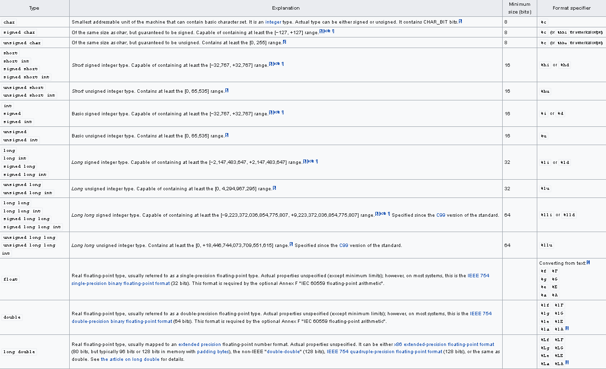

C Tutorial – Variable

Constants are fixed values that do not change during program execution. – C Tutorial – Constant
AND…
A variable is just the name of a memory area that the program can manipulate. Each variable in C has a specific type. The type determines the size and layout of the variable storage. Values in this range can be stored in memory, and operators can be applied to variables.
The name of a variable can consist of letters, numbers, and underscore characters. It must start with a letter or underscore. Uppercase and lowercase letters are different, because C is case sensitive. Based on the basic types explained in the previous chapter, there are the following basic variable types:
 The C language also allows the definition of various other types of variables, such as enumerations, pointers, arrays, structures, unions, etc., which will be explained in subsequent chapters. In this chapter, we will first explain the basic variable types.
Variable definition
Variable definition tells the compiler where to create the storage of the variable and how to create the storage of the variable. The variable definition specifies a data type and contains a list of one or more variables of that type, as shown below:
1 | type variable_list; |
Here, type must be a valid C data type, which can be char, w_char, int, float, double, or any user-defined object. variable_list can consist of one or more identifier names, between multiple identifiers separate with commas. Here are a few valid statements:
1 | int i, j, k; |
Of course, variables can be initialized at the time of declaration (specify an initial value). The initializer consists of an equal sign followed by a constant expression:
1 | type variable_name = value; |
Examples:
1 | extern int d = 3, f = 5; //The declaration and initialization of 'd' and 'f' |
Definition without initialization: Variables with static storage duration will be implicitly initialized to NULL (the value of all bytes is 0), and the initial values of all other variables are undefined.
Variable declaration
Variable declaration assures the compiler that the variable exists with the specified type and name, so that the compiler can continue further compilation without knowing the complete details of the variable.
There are two cases of variable declaration:
Need to establish storage space.
For example:
int a;has established storage space when it is declared.Does not need to establish storage space, by using the
externkeyword to declare the variable name without defining it. For example:
extern int a;the variable a can be defined in other files.Unless there is an
externkeyword, it is the definition of a variable
Lvalues and Rvalues
There are two types of expressions in C:
Lvalue: An expression that points to a memory location is called an lvalue expression. The left value can appear on the left or right of the assignment number.
Rvalue: The term rvalue refers to the value stored at some address in memory. An rvalue is an expression that cannot be assigned, that is, an rvalue can appear on the right side of the assignment number, but cannot appear on the left side of the assignment number.
The variable is an lvalue, so it can appear to the left of the assignment number. Numeric literals are rvalues, so they cannot be assigned and cannot appear on the left side of the assignment number. The following is a valid statement:
1 | int a = 20; |
BUT
1 | 10 = 20; |
is wrong!!!
—————
Author：Theodore Cooper
Address： https://theodorecooper.github.io/2020/C-Tutorial-Variable/
Copyright：Copyright © 2020 Theodore Cooper. All rights reserved.
—————